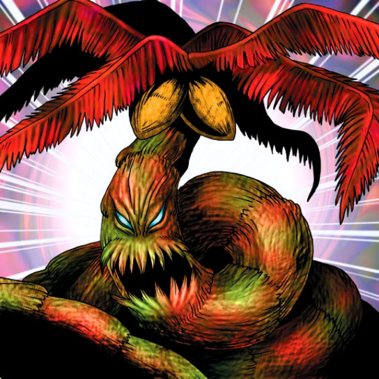

Snakeyashi

STATS
ATK: 1000
DEF: 1200DECK COST
Deck Cost per Card: 22Fusion List (9 Possible Fusions)
- Snakeyashi + Armaill = Bean Soldier
- Snakeyashi + Bone Mouse = Pumpking the King of Ghosts
- Snakeyashi + Fire Reaper = Pumpking the King of Ghosts
- Snakeyashi + Lesser Dragon = B. Dragon Jungle King
- Snakeyashi + Milus Radiant = Flower Wolf
- Snakeyashi + Skull Servant = Pumpking the King of Ghosts
- Snakeyashi + The Melting Red Shadow = Pumpking the King of Ghosts
- Snakeyashi + The Wandering Doomed = Pumpking the King of Ghosts
- Snakeyashi + Witch's Apprentice = Queen of Autumn Leaves